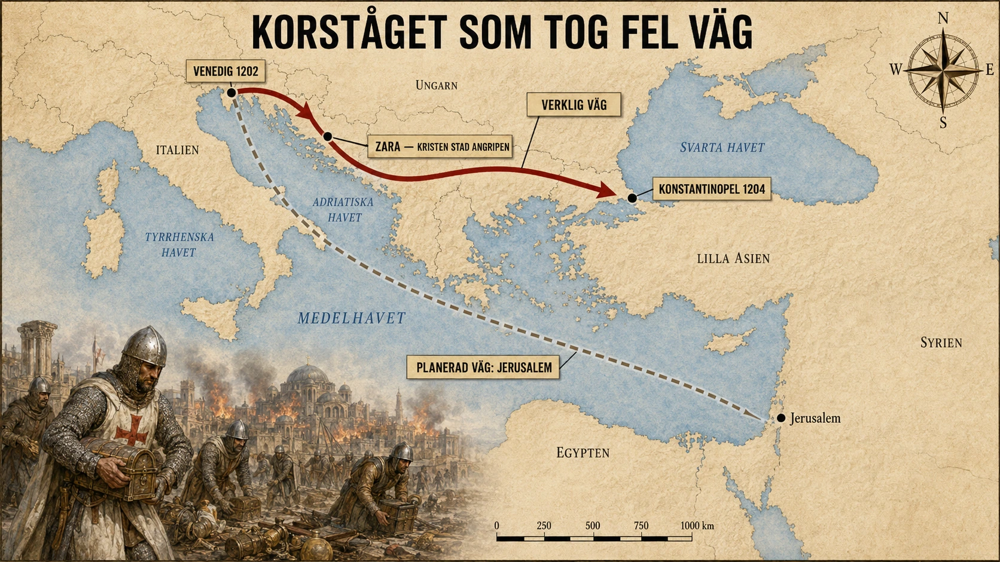

Ett historiskt misstag?
Ett korståg skulle gå till Jerusalem. Det skulle rikta sig mot muslimska makthavare i östra Medelhavet. Det skulle försvara kristenheten och återta heliga platser. Men år 1204 hände något som nästan låter som ett historiskt misstag: korsfarare från Västeuropa stormade och plundrade Konstantinopel, en av världens största kristna städer.
Det fjärde korståget är en av medeltidens mest häpnadsväckande händelser. Det började med religiös iver men slutade i skulder, maktspel, venetianska intressen och plundring av en kristen huvudstad. För att förstå hur det kunde hända måste vi börja med staden Konstantinopel.
Konstantinopel — den stora staden
Konstantinopel var huvudstad i det Bysantinska riket, alltså det östromerska riket som levde vidare efter Västroms fall. Staden låg strategiskt mellan Europa och Asien, vid Bosporen. Den kontrollerade viktiga handelsvägar mellan Svarta havet och Medelhavet. Den var rik, mäktig och full av kyrkor, palats, reliker, konst och skatter — en stad som med sina kanske 400 000 invånare gjorde Paris och London till småstäder i jämförelse.
För människorna i Västeuropa var Konstantinopel både imponerande och misstänkt. Bysantinarna var kristna, men de tillhörde den östliga kyrkan, som senare kallas den ortodoxa. Västeuropas kristna tillhörde den katolska kyrkan under påven. År 1054 hade den stora kyrkosplittringen mellan öst och väst blivit tydlig. Det fanns alltså religiösa spänningar mellan kristna grupper, även om de båda bekände sig till Kristus.
En plan som behövde fartyg
Det fjärde korståget utlystes av påven Innocentius III i slutet av 1100-talet. Målet var att återta Jerusalem, som hade varit under muslimsk kontroll sedan Saladins seger 1187. Men korsfararna planerade inte att gå raka vägen till Jerusalem. De tänkte först anfalla Egypten, eftersom Egypten var ett starkt muslimskt maktcentrum. Om Egypten kunde besegras skulle vägen mot Jerusalem bli lättare.
För att ta sig dit behövde korsfararna fartyg. Där kom handelsstaden Venedig in i bilden.
Venedig och dogen Dandolo
Venedig var en rik sjörepublik med enorm handelsflotta. Staden levde på handel, sjöfart och smart diplomati. Korsfararna slöt avtal med Venedig: venetianerna skulle bygga och utrusta en flotta som kunde transportera korsfararna över Medelhavet. Problemet var att färre korsfarare än väntat dök upp. Det betydde att korsfararna inte kunde betala hela summan de lovat.
Plötsligt stod de i skuld till Venedig.
Här börjar korståget glida bort från sitt ursprungliga mål. Venedigs gamle doge, Enrico Dandolo, var en skicklig och hårdför politisk ledare — kanske i 90-årsåldern, halvblind och ändå skarpare än de flesta av sin tid. Han föreslog att korsfararna kunde betala av skulden genom att hjälpa Venedig att inta staden Zara vid Adriatiska havet. Zara var en kristen stad, men den hade gjort uppror mot venetianskt inflytande.

Detta var redan ett moraliskt sammanbrott. Ett korståg som skulle kämpa för kristendomen anföll nu en kristen stad. Påven förbjöd anfallet och bannlyste inblandade korsfarare, men korståget fortsatte ändå. Zara intogs år 1202.
Men det skulle bli ännu värre.
Prinsen som lovade för mycket
Efter Zara drogs korsfararna in i en bysantinsk tronkonflikt. En prins vid namn Alexios Angelos sökte hjälp. Hans far hade avsatts som kejsare i Konstantinopel. Alexios lovade korsfararna enorma belöningar om de hjälpte honom att ta makten: pengar, militärt stöd till korståget och kanske till och med att den bysantinska kyrkan skulle underordna sig påven i Rom.
För korsfararna lät detta som en lösning på alla problem. De skulle få pengar, stöd och kyrklig ära. För Venedig fanns också starka handelsintressen. Konstantinopel var en rival och en port till östlig handel. Om staden kunde kontrolleras eller försvagas skulle Venedig vinna mycket.
Så korsfararna seglade mot Konstantinopel.
År 1203 lyckades de pressa fram ett maktskifte. Alexios blev kejsare tillsammans med sin far. Men löftena han hade gett var nästan omöjliga att uppfylla. Konstantinopels befolkning var fientlig mot västerländska korsfarare. Statens pengar räckte inte till de enorma betalningarna. Hatet växte. Till slut störtades Alexios och dödades. Korsfararna stod utanför staden, arga, skuldsatta och övertygade om att de hade blivit lurade.
Plundringen 1204
År 1204 anföll de Konstantinopel.
Staden hade stått emot många fiender genom historien. Dess murar var berömda. Men denna gång kom hotet från kristna soldater som egentligen hade svurit att kämpa för ett heligt mål. Efter hårda strider bröt korsfararna in. Sedan följde flera dagar av plundring.
Kyrkor rånades. Palats tömdes. Reliker fördes bort. Konstverk förstördes eller stals. Hästarna från Hippodromen, de berömda bronshästarna, hamnade senare i Venedig — där fyra av dem fortfarande står (de original man kan se i dag står i Markusbasilikan, kopior på fasaden). Heliga föremål som tillhört östkyrkan fördes till väst. För bysantinarna var detta ett trauma. En kristen stad hade blivit skövlad av kristna korsfarare.
Vad det kostade
Det är svårt att överdriva betydelsen. Konstantinopel var inte vilken stad som helst. Den var arvtagare till Rom, centrum för den östliga kristenheten och en av medeltidens rikaste städer. Plundringen 1204 försvagade Bysantinska riket kraftigt. Efteråt skapade korsfararna ett nytt rike, det så kallade Latinska riket, med en västerländsk kejsare i Konstantinopel. Bysantinska grupper överlevde på andra håll och lyckades återta staden 1261, men riket återhämtade sig aldrig helt.
På lång sikt bidrog detta till att Bysans blev svagare inför framtida hot. När osmanerna till slut erövrade Konstantinopel år 1453 var riket redan mycket mindre och svagare än under sin storhetstid. Man kan inte säga att fjärde korståget ensamt orsakade Bysans fall, men det var ett hårt slag som fick långvariga följder — och därmed bidrog till att Sydösteuropa hamnade under osmansk dominans i fem hundra år.
Det fjärde korståget fördjupade också splittringen mellan katoliker och ortodoxa. Misstron mellan öst och väst blev starkare. För många ortodoxa kristna blev 1204 ett bevis på att västkyrkan och de västeuropeiska makterna kunde vara lika farliga som yttre fiender — ett minne som lever vidare i de ortodoxa kyrkorna än i dag.
Varför är detta så viktigt?
För det första visar det att korstågen inte bara handlade om "kristna mot muslimer". De handlade också om makt, pengar, handel, prestige och interna kristna konflikter. Religionen var verklig och viktig, men den blandades med politiska och ekonomiska intressen.
För det andra visar händelsen hur historiska skeenden kan spåra ur. Ett mål kan förändras steg för steg. Först saknas pengar. Sedan tar man ett uppdrag för att betala en skuld. Sedan blandar man sig i en tronkonflikt. Sedan blir man indragen i våld. Till slut står man på en plats som inte alls var målet från början.
För det tredje visar det fjärde korståget hur stark Venedigs roll var. Venedig var inte bara en neutral transportör. Staden hade egna intressen. Handel, hamnar, skulder och sjövägar kunde styra historien lika mycket som fromma predikningar. En åldrad doges politiska skicklighet kunde betyda mer än en påves brev.
När alla beslut är möjliga
Det fjärde korståget är en perfekt historisk detektivhistoria. När man börjar vet man målet: Jerusalem. När man slutar står korsfararna i Konstantinopel och plundrar kristna kyrkor. Frågan blir: hur kunde det gå så fel?
Svaret är att historia sällan drivs av en enda orsak. Korståget styrdes av religiös övertygelse, men också av skuld, logistik, sjöfart, handel, personliga ambitioner, politiska löften och misstänksamhet mellan kristna kyrkor. När alla dessa krafter drog åt olika håll krossades det ursprungliga målet.
Det fjärde korståget blev en av medeltidens stora paradoxer. Ett heligt krig för kristendomen slutade med att kristna plundrade en av kristenhetens största städer. Den visar att människor kan tala om heliga ideal och samtidigt drivas av makt och pengar. Och den visar att de största katastroferna ibland inte börjar med en tydlig plan, utan med en rad beslut där varje steg verkar möjligt — tills allt har gått för långt.